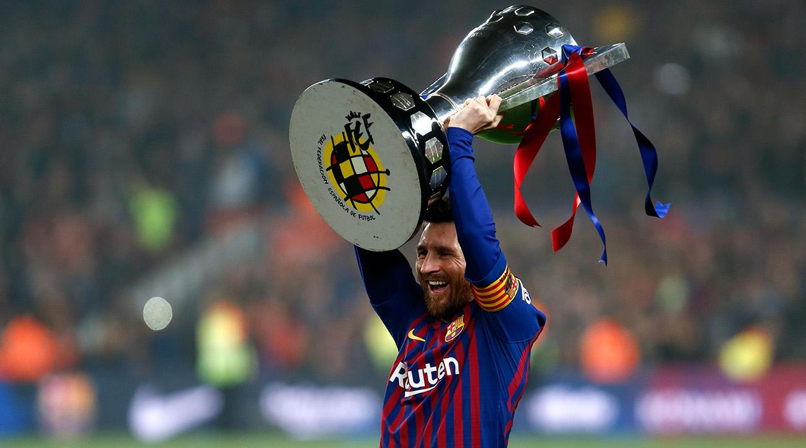
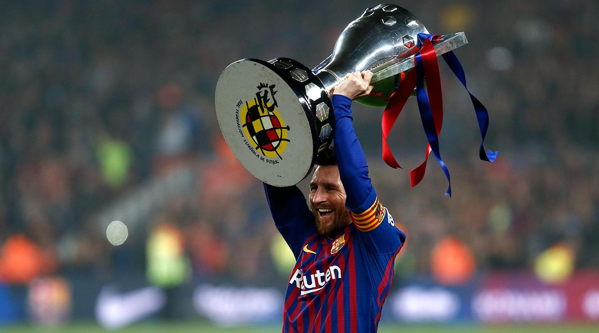

He was born in 24 June 1987,As you guys all know he is an Argentine professional footballer who plays as a forward and captains both Barcelona and the Argentina national team. Often considered the best player in the world and widely regarded as one of the greatest players of all time, Messi has a record-tying five Ballon d'Or awards,[note 2] four of which he won consecutively, and a record six European Golden Shoes. He has spent his entire professional career with Barcelona, where he has won a club-record 34 trophies, including ten La Liga titles, four UEFA Champions League titles and six Copas del Rey. A prolific goalscorer and a creative playmaker, Messi holds the records for most goals in La Liga (419), a La Liga and European league season (50), mo st hat-tricks in the UEFA Champions League (8), and most assists in La Liga (169) and the Copa América (11). He has scored over 695 senior career goals for club and country. Born and raised in central Argentina, Messi was diagnosed with a growth hormone deficiency as a child. At age 13, he relocated to Spain to join Barcelona, who agreed to pay for his medical treatment. After a fast progression through Barcelona's youth academy, Messi made his competitive debut aged 17 in October 2004. Despite being injury-prone during his early career, he established himself as an integral player for the club within the next three years, finishing 2007 as a finalist for both the Ballon d'Or and FIFA World Player of the Year award, a feat he repeated the following year. His first uninterrupted season was 2008–09, during which he helped Barcelona achieve the first treble in Spanish football. At 22 years old, Messi won the 2009 Ballon d'Or and the 2009 FIFA World Player of the Year award by record voting margins. Three successful seasons followed, with Messi winning three consecutive FIFA Ballons d'Or, including an unprecedented fourth. During the 2011–12 season, he set the La Liga and European records for most goals scored in a single season, while establishing himself as Barcelon a's all-time top scorer in official competitions in March 2012. The following two seasons, Messi finished twice second for the Ballon d'Or behind Cristiano Ronaldo, his perceived career rival. Messi regained his best form during the 2014–15 campaign, breaking the all-time goalscoring records in both La Liga and the Champions League in November 2014,[note 3] and leading Barcelona to a historic second treble.
 
